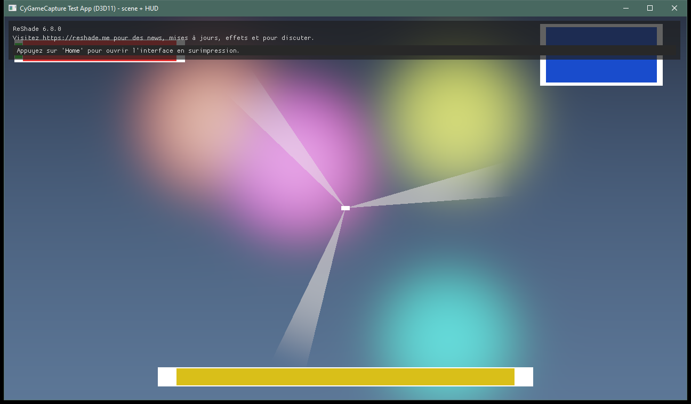
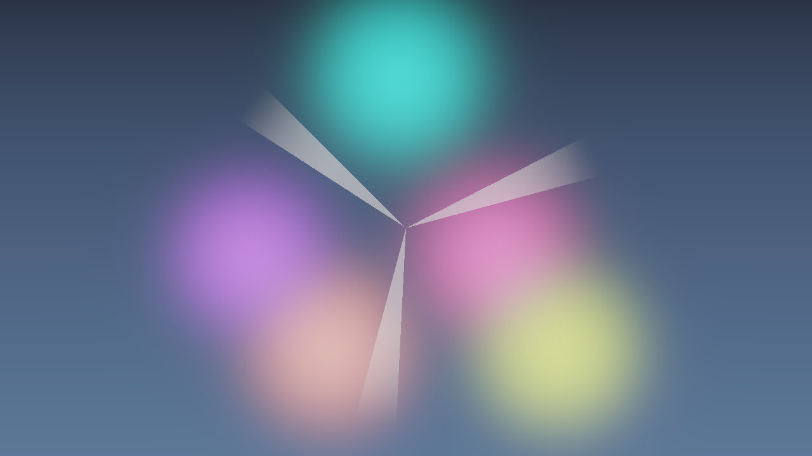
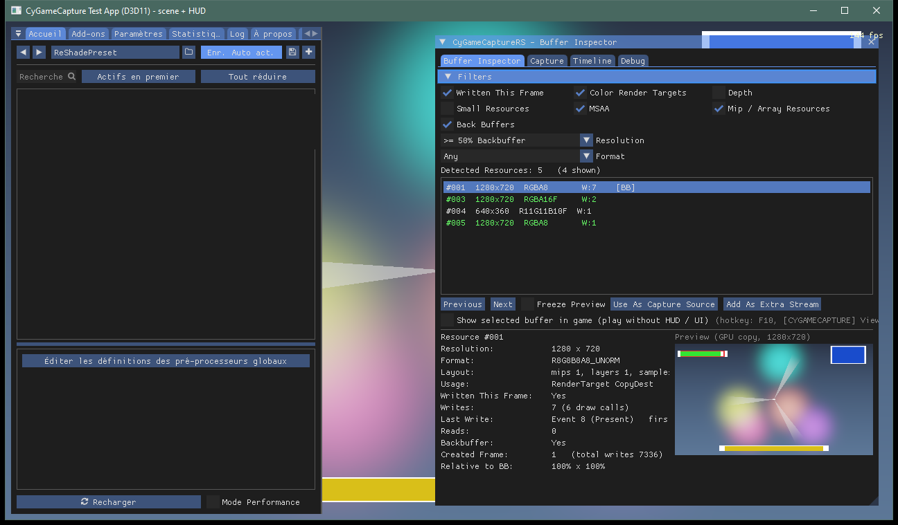
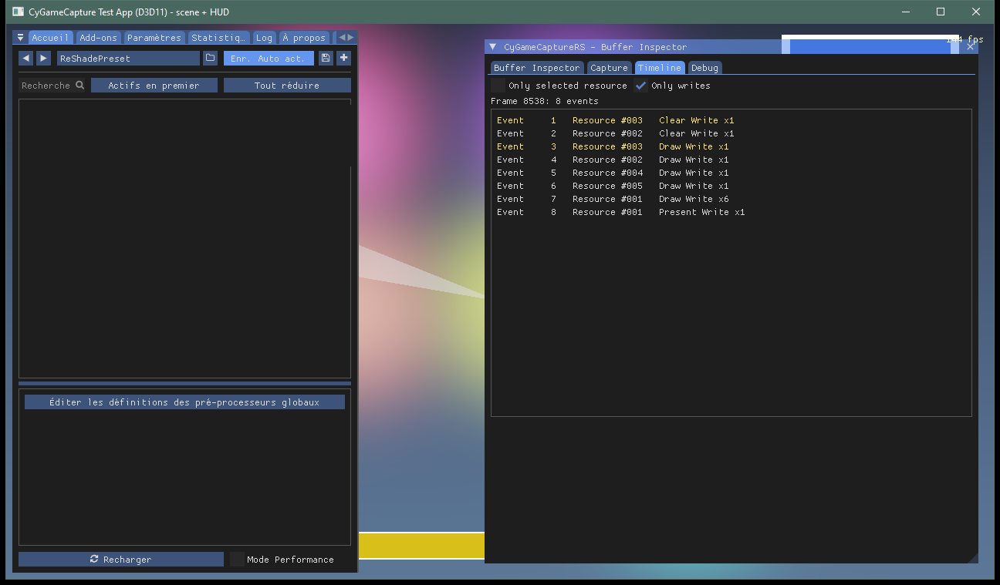
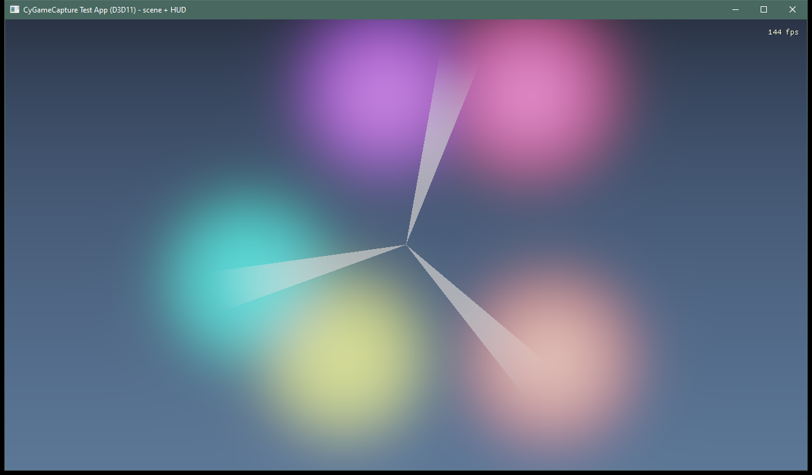
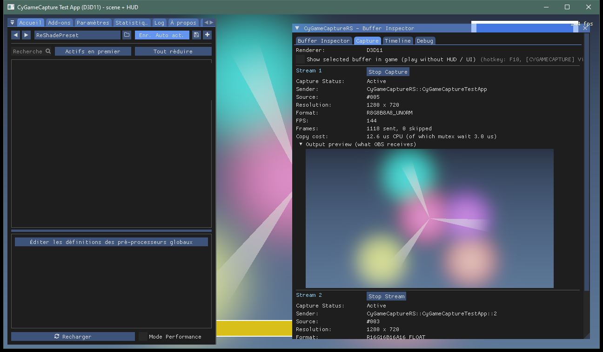

GPU CAPTURE TOOLKIT
Guide utilisateur
De la première capture sans interface aux enregistrements synchronisés : installation, choix des buffers, assistant IA, OBS et Unreal Engine.
Pour CyGameCapture 0.1.0 · Anglais par défaut · Édition française complète.
Aucun chapitre correspondant. Essayez un autre mot ou effacez la recherche.
01 · À quoi sert CyGameCapture
CyGameCapture sélectionne des images dans le rendu d’un jeu et les partage avec Spout2. Vous pouvez conserver l’image normale avec son interface tout en envoyant une scène propre à OBS, capturer la profondeur, isoler le HUD ou diffuser plusieurs buffers à la fois.
- Add-on ReShade : inspecter un jeu, choisir une cible de rendu et la diffuser.
- Plugin OBS : recevoir un flux comme source et, si nécessaire, enregistrer plusieurs sources dans des fichiers séparés.
- Plugin Unreal : envoyer des render targets, des scene captures ou un viewport et recevoir des images Spout dans Unreal.
- Assistant IA : proposer un buffer et un moment de capture à partir des images d’une frame D3D11.
Le partage et la capture habituelle restent sur le GPU. L’encodage d’un enregistrement est une opération distincte ; l’assistant lit de petites images dans son propre processus uniquement lorsque vous demandez une analyse.
02 · Installer et mettre à jour
Prérequis
Utilisez Windows 10/11, un jeu 64 bits et un moteur DirectX compatible. D3D11 et D3D12 sont les chemins de capture testés ; la prise en charge D3D10 est limitée. La capture à un moment de la frame et l’analyse IA nécessitent D3D11. Vulkan et OpenGL ne sont pas pris en charge par ce pipeline. Choisissez un jeu dans lequel ReShade est autorisé et fonctionne normalement.
ReShade
- Installez ReShade 6.8.0 avec prise en charge des add-ons pour le jeu et son API graphique réelle. La version standard ne charge pas cet add-on ; l’API ciblée est la 20.
- Extrayez l’archive ReShade. Copiez ensemble
CyGameCaptureRS.addon64,CyGameCaptureAI.exe,Documentationet les licences près de l’exécutable du jeu, ou dans le répertoire d’add-ons configuré dans ReShade. - Lancez le jeu. Ouvrez ReShade avec Home. Repérez CyGameCaptureRS – Buffer Inspector. Son en-tête propose le bouton Guide utilisateur.
OBS
Utilisez OBS Studio 64 bits, version 29.1 ou ultérieure (testé avec 29.1.3). Fermez OBS. Extrayez toute l’archive OBS et lancez Install-OBS-Plugin.cmd, ou utilisez l’installateur du dossier de test. Relancez OBS et ajoutez une source CyGameCapture. Un récepteur Spout2 générique convient également. Les propriétés de la source native proposent Guide utilisateur ; le manuel est installé avec ses données.
Mettre à jour ou retirer
Fermez le jeu et OBS avant de remplacer les fichiers utilisés. Conservez un ancien paquet pour revenir en arrière. Remplacez ensemble les binaires, l’assistant, la documentation et les licences. Gardez votre ReShade.ini, vos réglages OBS et vos collections de scènes. Ne remplacez pas la configuration de votre jeu par l’INI de démonstration. Pour retirer l’add-on, supprimez ses fichiers de son répertoire d’installation ; utilisez le désinstallateur fourni pour OBS. L’installation Unreal est décrite au chapitre 12.
03 · Première capture sans interface
- Affichez une scène de jeu avec le HUD visible. Évitez un écran de chargement noir.
- Ouvrez l’overlay avec Home, puis Inspecteur de buffers.
- Choisissez dans les vignettes une image complète, aux bonnes couleurs, sans HUD. Vérifiez-la dans l’aperçu. Si elle n’existe pas, essayez un moment avant le HUD ou l’assistant IA.
- Cliquez sur Use As Capture Source (utiliser comme source). Dans Capture, vérifiez la résolution, les FPS, les images envoyées et l’aperçu de sortie.
- Dans OBS, ajoutez CyGameCapture et sélectionnez
CyGameCaptureRS::<Jeu>. Actualisez la liste si nécessaire. - Fermez l’overlay ReShade. Gardez votre HUD habituel dans le jeu pendant qu’OBS reçoit la scène sélectionnée.




04 · Trouver et inspecter les buffers
Un buffer / render target est une texture utilisée par le jeu pendant le dessin d’une frame. L’image finale affichée est le back buffer. Les autres cibles contiennent souvent des données intermédiaires : normales, éclairage ou profondeur. Une image ressemblant à la scène n’est donc pas forcément prête à être affichée.
La planche de vignettes / Contact Sheet montre les aperçus. Cliquez pour sélectionner un buffer. Le tableau indique son identifiant, sa taille, son format, ses écritures et son pourcentage de stabilité Steady. Une bonne source persistante est écrite presque à chaque frame. Steady buffers only masque les ressources temporaires ; désactivez-le pour rechercher une cible absente.
- Filtrez les textures écrites récemment, couleur, profondeur, MSAA, mip/array, taille relative au back buffer et format. Changez le tri si nécessaire.
- Utilisez Précédent / Suivant, les flèches ou une ligne du tableau. Freeze Preview fige l’inspection, sans mettre le jeu en pause.
- Vérifiez l’image entière : objets présents, absence de HUD, de flou, de couleurs anormales ou de bordures périmées. Pour une capture SDR, préférez la couleur finale après tonemapping.
- La résolution dynamique peut n’utiliser qu’une partie d’une texture. L’overlay indique la zone réellement rendue ; la capture la redimensionne vers une taille de flux stable.
- Les identifiants ne restent stables que pendant une exécution. Revérifiez-les après un redémarrage ou un changement de réglages graphiques.


Timeline et Debug
Timeline liste les événements clear, draw, copy, resolve et present de la dernière frame. Filtrez les écritures ou la ressource choisie ; cliquer sur un événement sélectionne sa ressource. Debug affiche le moteur graphique, le numéro de frame et les compteurs du suivi. Activez les traces détaillées uniquement pour un diagnostic : le journal de chaque ressource peut devenir volumineux.


05 · Capturer avant le dessin du HUD
Certains jeux dessinent la scène finale et l’interface dans le même back buffer. À la fin de la frame, aucune cible propre ne subsiste. Sélectionnez le back buffer et capturez-le entre ces écritures.
- Sélectionnez le back buffer dans l’inspecteur.
- Lisez Writes of this buffer in the last frame, la liste de ses écritures.
- Reculez Moment of the frame depuis la fin jusqu’à obtenir dans l’aperçu une scène complète sans interface. Une image seulement effacée ou partielle signifie que vous êtes allé trop tôt.
- Utilisez ce réglage comme source de capture. L’aperçu, la capture et la vue en jeu utilisent le moment choisi.
Exemple : dans le menu de Stray testé, #005 après l’écriture 2 se situe après le tonemapping et avant l’interface. Ce n’est pas un réglage universel : l’identifiant et l’ordre dépendent du jeu et de la scène. Un logo dessiné dans la scène 3D reste présent.
06 · Jouer avec l’image sélectionnée
Activez Show selected buffer in game ou appuyez sur F10 pour remplacer l’image affichée au joueur par le buffer sélectionné. Répétez pour revenir à la vue normale. Le raccourci se règle avec ViewToggleKey ; zéro le désactive.
Cette fonction est distincte de la diffusion : une image correcte en jeu ne prouve pas que la capture est démarrée ni qu’OBS reçoit le bon émetteur. Vérifiez la sortie dans l’onglet Capture.
La texture choisie doit avoir la taille du back buffer et un format compatible pour la copie. Le redimensionnement et la conversion de format pour ce remplacement en jeu ne sont pas disponibles. Utilisez la scène propre ou un moment compatible ; la profondeur et les images HDR intermédiaires ne conviennent pas forcément à l’affichage direct.


07 · Flux, aperçus et alpha
Use As Capture Source sélectionne le flux principal. Add As Extra Stream ajoute un buffer sans le remplacer. Les noms suivent CyGameCaptureRS::Jeu, puis ::2, ::3, etc. Arrêtez chaque flux devenu inutile avec son bouton Stop.
L’onglet Capture indique l’état, l’émetteur, la source, la résolution, le format, les FPS, les images envoyées/ignorées et le coût CPU de copie. Output preview (what OBS receives) affiche la texture publiée. L’aperçu de l’inspecteur montre seulement la sélection actuelle, pas forcément ce qu’un flux existant envoie.


Image transparente alors que le RGB est correct
Certains jeux laissent l’alpha à zéro dans une image couleur complète. Les flux couleur sont opaques par défaut, sans modifier le RGB. Activez Preserve source alpha (advanced) uniquement si vous avez besoin de la transparence d’origine. Ce réglage est propre à chaque flux ; PreserveSourceAlpha définit la valeur initiale des nouveaux flux. Les flux HUD conservent toujours leur masque. L’inspecteur affiche le RGB de façon opaque : il peut donc paraître correct alors qu’un récepteur rend invisible une texture à alpha zéro préservé.
Flush after copy soumet immédiatement le travail D3D11. Laissez-le normalement désactivé ; essayez-le pour diagnostiquer une latence de livraison. Il ne corrige ni une mauvaise source ni l’absence de récepteur et ajoute du travail CPU.
08 · Recevoir et composer dans OBS
- Démarrez d’abord la capture dans le jeu.
- Dans OBS, Sources → + → CyGameCapture. Nommez la source selon son rôle : Scène, HUD ou Profondeur.
- Choisissez l’émetteur exact. Actualiser la liste relance la découverte. Activez Lister tous les émetteurs Spout pour inclure les autres applications.
- Vérifiez l’état, la résolution et les FPS. Ajustez la source au canevas et assurez-vous qu’elle est visible dans la scène actuelle.
Automatique choisit un émetteur CyGameCapture disponible ; préférez un nom explicite pour plusieurs flux. Reconnexion automatique retrouve l’émetteur choisi lorsqu’il revient. Conserver la dernière image garde l’image précédente pendant un transfert manqué : cela peut ressembler à un gel si le producteur est arrêté. Un ancien émetteur sélectionné peut rester affiché comme inactif.
Le partage Spout est local à ce PC. Utilisez le même GPU pour le jeu et OBS, notamment sur un portable avec GPU intégré et dédié. Un nom visible prouve l’enregistrement de l’émetteur, pas la bonne livraison de l’image. L’aperçu de sortie et le récepteur de diagnostic permettent d’isoler le problème.
Pour composer, placez une source HUD isolée au-dessus de la scène propre. Les pixels transparents nécessitent un flux conservant l’alpha et, pour enregistrer ce calque, un mode compatible. Les sources peuvent avoir des tailles différentes : contrôlez leurs transformations.
09 · Enregistrer plusieurs buffers ensemble
Le plugin OBS natif peut enregistrer plusieurs buffers dans des fichiers séparés et synchronisés, indépendamment d’un enregistrement ordinaire du canevas OBS.
- Créez une source OBS CyGameCapture par buffer avec un émetteur explicite.
- Cochez Enregistrer ce buffer sur chaque source à inclure.
- Choisissez le dossier de prise, l’encodage, le conteneur et la piste audio OBS (1 à 6).
- Cliquez une fois sur Démarrer l’enregistrement de tous les buffers sélectionnés. Terminez avec Arrêter l’enregistrement.
- Vérifiez chaque fichier, les compteurs, les images ignorées et le décalage annoncé. Les fichiers partagent l’horodatage de la prise et portent le nom de leur source/émetteur.
Chaque source dispose de son mix vidéo à la résolution native, de son encodeur et de son multiplexeur. Les producteurs publient les mêmes indices de frame ; l’enregistreur rapporte les différences quand il peut les vérifier. La synchronisation est mesurée ; cela ne garantit pas qu’aucune frame ne sera jamais manquée.
| Encodage | Utilisation | Limites |
|---|---|---|
| Matériel (NVENC / AMF / QuickSync ; repli logiciel selon le choix) | Vidéo couleur habituelle, fichiers plus petits | La conversion YUV peut perdre précision, chrominance et alpha. Inadapté à la conservation de profondeur. |
| RGB 8 bits sans perte · FFV1 | Couleur 8 bits exacte et masques de HUD | Conserve l’alpha ; limité à 8 bits. |
| 4:4:4 16 bits sans perte · FFV1 | Profondeur plus précise | YUV, sans alpha. OBS utilise en interne des flottants demi-précision : les 16 bits unorm complets ne sont pas conservés. |
Préférez Matroska (.mkv) pour des prises récupérables. Un MP4 interrompu peut devenir inutilisable. Les modes sans perte passent par FFV1 et Matroska ; prévoyez de l’espace disque et vérifiez d’abord une courte prise. Une piste audio est un mix OBS : réglez son contenu dans les Propriétés audio avancées d’OBS. Chaque fichier peut recevoir le mix choisi ; cela ne capture pas directement le son du jeu.
Démarrer la prise automatiquement attend une image sur chaque source choisie et se déclenche une fois par exécution d’OBS. Désactivez-le pour un contrôle manuel. Les outils de vérification permettent d’examiner ce que le fichier conserve réellement.
10 · Utiliser l’assistant IA
L’assistant utilise un client Claude Code, Codex ou OpenCode installé et connecté à votre compte. Il est facultatif ; la capture manuelle fonctionne sans lui. CyGameCapture n’intègre pas de modèle et ne stocke pas de clé API fournisseur.
- En D3D11, affichez une véritable scène de jeu avec son interface visible.
- Choisissez un client dans Assistant IA et cliquez sur la recherche. Une fenêtre de discussion s’ouvre.
- L’add-on échantillonne des buffers et des moments dans une image GPU partagée.
CyGameCaptureAI.exelit ces images hors du jeu et demande au client choisi d’identifier une scène complète sans HUD. - Lisez l’explication et la proposition. Show / Voir la sélectionne pour inspection ; Apply / Appliquer l’utilise pour la capture ; Appliquer et envoyer aussi l’interface seule demande également un flux HUD dérivé.
- Précisez par exemple « les sous-titres restent ». Gardez Joindre l’image actuelle activé pour fournir des captures récentes. Envoyez avec le bouton ou Ctrl+Entrée. Nouvelle discussion remet la conversation à zéro.
La proposition contient un identifiant de buffer et, si nécessaire, un moment d’écriture. Elle est vérifiée par rapport à la frame analysée. Inspectez-la : un changement de scène peut l’invalider. Un chargement noir, un jeu masqué ou un HUD absent fournissent trop peu d’indices au modèle.
Confidentialité et diagnostic
Le fournisseur du client choisi reçoit les images échantillonnées, les métadonnées des buffers et la conversation via votre compte. Les 12 derniers messages peuvent accompagner la requête suivante. L’activité peut consommer votre quota fournisseur. Les fichiers locaux se trouvent dans %LOCALAPPDATA%\CyGameCapture\AI\<jeu> : prompt.txt, answer.txt et picture_NN.png. Ils peuvent contenir des images du jeu et vos échanges. Supprimez-les lorsqu’ils sont inutiles et masquez les informations privées avant de les partager.
Réglages facultatifs : AIClient, AIModel, AIClientPath et AILanguage. Si un client est absent, installez-le et connectez-vous séparément, puis indiquez son exécutable si la détection échoue. Si le programme assistant manque, remettez-le près de l’add-on. L’analyse aux moments de la frame n’est pas disponible en D3D12.
11 · Profondeur et HUD isolé
Profondeur
Sélectionnez une texture de profondeur et cliquez sur Use As Depth Stream. CyGameCapture la linéarise en R16G16B16A16_UNORM. Réglez le plan lointain, le Z inversé, la profondeur logarithmique et l’inversion verticale selon le jeu, comme pour les réglages de profondeur ReShade. Des paramètres incorrects produisent une image inversée, presque blanche ou géométriquement fausse. Choisissez la profondeur de la scène principale, pas une carte d’ombres. Vérifiez les distances en vous déplaçant.
Interface seule
- Capturez la scène propre en flux 1, depuis une cible distincte ou un moment intermédiaire.
- Sélectionnez l’image finale en fin de frame, généralement le back buffer.
- Cliquez sur Isolate HUD Against Stream 1.
- Ajustez
HudThresholdetHudSoftnesspour rejeter les écarts de scène sans effacer le texte.HudKeepFinalColourconserve les couleurs finales de l’interface.
Le HUD dérivé correspond à la différence entre l’image finale et la scène propre, accompagnée d’un masque de transparence. Les zones opaques peuvent être exactes ; les contours doux et les effets restent approximatifs. Le mouvement, un post-traitement différent ou un mauvais moment peuvent laisser des résidus de scène. Si le jeu possède déjà un render target HUD transparent, capturez-le directement en préservant son alpha.
Les deux traitements dérivés fonctionnent en D3D11 et D3D12. Cela ne rend pas disponibles les moments intermédiaires en D3D12. Pour enregistrer un HUD transparent, choisissez le RGB 8 bits sans perte ; les autres chemins d’enregistrement perdent l’alpha.
12 · Émetteur et récepteur Unreal Engine
Installez le paquet correspondant à votre version Unreal dans <Projet>\Plugins\CyGameCaptureUE, activez le plugin et redémarrez. Les archives précompilées couvrent les versions indiquées dans leur nom. Les sources ciblent UE 4.27–5.8 ; la compilation 4.27 n’est pas encore vérifiée. Les RHI pris en charge sont Win64 D3D11 et D3D12. Le manuel hors connexion se trouve aussi dans Docs/UserGuide/index.html du plugin.
Envoyer une image
- Ajoutez un composant CyGameCapture Spout Sender à un acteur.
- Choisissez Render Target (affectez un
UTextureRenderTarget2D), Scene Capture (composant existant ou vide pour en créer un), ou Game Viewport (aucun second rendu de scène). - Choisissez le nom du flux et gardez Auto Start activé. Begin Play publie
CyGameCaptureUE::Projet::Flux. - Sélectionnez cet émetteur dans OBS ou un autre récepteur Spout.
Les scene captures gérées exposent une taille et un format, et coûtent un rendu de scène supplémentaire. Une fréquence personnalisée limite les copies GPU. Les cibles prises en charge comprennent RGBA8, RGBA8 sRGB, RGB10A2, RGBA16f et RGBA32f. Les autres formats produisent une erreur ; les images HDR flottantes demandent un récepteur adapté ou une conversion SDR. Les politiques de collision sont Fail, Auto Rename ou Replace If Owned By This Process. N’attribuez pas le même nom fixe à plusieurs flux actifs.
Recevoir une image
- Ajoutez un composant CyGameCapture Spout Receiver.
- Indiquez le nom exact ; Get Available Spout Sender Names liste les candidats.
- Gardez Internal Render Target et Auto Connect pour une sortie gérée. Le mode User Render Target demande votre propre cible avec redimensionnement automatique facultatif.
- Sur On Connected, récupérez Get Receiver Texture et affectez-la au paramètre de texture d’un matériau dynamique. Pour UMG, utilisez un matériau UI sur un widget Image.
Les événements signalent connexion, déconnexion, arrivée de frame, taille, format et erreurs. Les événements de frame peuvent être limités en fréquence. Le redimensionnement conserve l’objet render target mais peut recréer sa texture interne. Les flux s’arrêtent avec EndPlay et la destruction du monde.
Réglages et diagnostic
Project Settings → Plugins → CyGameCapture contrôle les valeurs initiales, la capture éditeur et les limites. Le PIE dans le viewport principal capture le back buffer de toute la fenêtre éditeur ; utilisez New Editor Window ou Standalone pour isoler le jeu.
CyGameCapture.ListSenders
CyGameCapture.ListReceivers
CyGameCapture.Spout.List
CyGameCapture.Debug 1Les composants Blueprint exposent Start/Stop, les sources, l’état de connexion et les statistiques. En C++, utilisez UCyGameCaptureSubsystem, CreateSender, CreateReceiver et les destructions correspondantes. Les références développeur détaillées sont livrées dans les autres fichiers Docs/*.md du plugin.
13 · Langues, raccourcis et configuration
L’overlay démarre en anglais. Choisissez English ou Français près du logo ; le choix est conservé dans ReShade.ini. Le bouton du guide ouvre l’édition correspondante. OBS suit sa propre langue ; les langues non prises en charge utilisent le guide anglais. Les liens de langue du manuel conservent le chapitre courant. Le fichier initial index.html est toujours en anglais.
Les réglages se trouvent dans ReShade.ini, section [CYGAMECAPTURE]. Fermez le jeu avant une modification manuelle et sauvegardez le fichier. Les noms des clés et leurs valeurs restent identiques dans les deux langues.
[CYGAMECAPTURE]
Language=fr
PreserveSourceAlpha=0
ViewToggleKey=121
AIClient=auto| Clé | Défaut | Signification |
|---|---|---|
Language | en | Langue de l’overlay : en ou fr ; modifiable près du logo. |
SenderName | CyGameCaptureRS::<exe name> | Nom de base personnalisé des émetteurs Spout. |
ViewToggleKey | 121 (F10) | Code de touche Windows pour la vue en jeu ; 121 = F10, 0 désactive. |
PreserveSourceAlpha | 0 | Valeur initiale des nouveaux flux couleur : 0 opaque, 1 alpha d’origine. Le HUD garde son masque. |
StandaloneWindow | 1 | Afficher l’inspecteur dans sa fenêtre lorsque l’overlay est ouvert. |
FlushAfterCopy | 0 | Soumettre immédiatement après copie ; ajoute du travail CPU. |
Verbose | 0 | Journaliser chaque création/destruction de ressource pour diagnostic. |
AutoCapture | vide | Amorçage/test : sélectionner par taille:format, par #ID ou #ID@écriture. Séparer les flux par ;. Suffixes :depth et :hud. Exemple : #5@2;#5:hud. Les identifiants peuvent changer au redémarrage. |
DumpBuffers | 0 | À cette frame, écrire une fois la liste des buffers dans ReShade.log. |
AIClient | auto | Client IA : auto, claude, codex ou opencode. Auto choisit le premier installé. |
AIModel | vide | Modèle transmis au client ; vide pour son modèle par défaut. |
AIClientPath | vide | Chemin complet de l’exécutable du client si la détection échoue. |
AILanguage | langue de l’overlay | Langue des réponses IA : fr ou en ; vide pour suivre l’overlay. |
AISearchOnStart | 0 | Test : lancer une analyse à cette frame, au plus tôt à la frame 60. |
OpenOverlayOnStart | 0 | Test : ouvrir l’overlay une fois le jeu stabilisé. |
DepthFarPlane | 1000 | Distance du plan lointain, mappée sur le blanc par la linéarisation. |
DepthReversed | 0 | 1 lorsque le plan proche est encodé à 1 dans la profondeur du jeu. |
DepthLogarithmic | 0 | 1 pour une profondeur logarithmique. |
DepthUpsideDown | 0 | 1 si la profondeur est inversée verticalement par rapport à la couleur. |
HudThreshold | 0.02 | En dessous de cet écart, considérer le pixel comme scène seule. |
HudSoftness | 0.08 | Écart à partir duquel le masque HUD devient opaque. |
HudKeepFinalColour | 1 | Garder les couleurs finales dans le HUD plutôt que la différence brute. |
Home ouvre ReShade par défaut (ReShade peut modifier cette touche). F10 bascule l’image sélectionnée en jeu. Ctrl+1…4 choisit inspecteur, capture, timeline et debug lorsque l’overlay a le focus. Les flèches gauche/droite parcourent les buffers. Ctrl+Entrée envoie un message à l’assistant.
14 · Performances et compatibilité
- Un flux normal demande une copie GPU par frame ; D3D12 utilise un pont D3D11On12 avec un travail supplémentaire. Les flux dérivés et les moments ajoutent des passes/copies GPU. Le coût CPU affiché n’est pas le coût total du GPU ou de l’encodeur.
- La résolution, le nombre de flux, les encodeurs et le débit disque influencent le résultat. Commencez par un flux, puis ajoutez-en en surveillant FPS, images ignorées et charge GPU.
- Le produit n’impose pas un nombre fixe de flux. La table Spout de la machine contient 64 émetteurs par défaut, partagés avec les autres applications. Arrêtez les producteurs inutiles. Les utilisateurs avancés peuvent modifier
HKCU\Software\Leading Edge\Spout\MaxSendersvia les réglages Spout. Les récepteurs ne consomment pas de places d’émetteur. - Les limites de sécurité, comme les 256 flux de l’add-on et StreamSanityLimit dans Unreal, protègent d’une création incontrôlée. Elles ne garantissent pas les performances.
- Une texture HDR flottante, de normales ou d’éclairage n’est pas une image SDR prête à l’affichage. Choisissez la scène après tonemapping ou prévoyez une conversion chez le producteur. Format et résolution doivent convenir au récepteur.
- Des textures peuvent disparaître après un changement de mode. Actualisez, resélectionnez et vérifiez après un redimensionnement, un changement graphique ou de scène.
| Fonction | D3D11 | D3D12 |
|---|---|---|
| Capture couleur Spout, plusieurs flux | Oui | Oui, avec pont |
| Profondeur et HUD dérivé | Oui | Oui |
| Moment d’écriture intermédiaire | Oui, sans MSAA | Non |
| Recherche de buffer par IA | Oui | Non |
15 · Dépannage
| Symptôme | Vérifications et correction |
|---|---|
| L’add-on n’apparaît pas | Vérifiez jeu 64 bits, exécutable/dossier correct, version ReShade avec add-ons/API 20 et ReShade.log. Les anciennes API ne le chargent pas. |
| Aperçu de l’inspecteur vide | Choisissez une cible couleur récemment écrite. Désactivez l’aperçu figé. Vérifiez taille/format et l’erreur ; attendez une copie si vous venez de choisir un moment. Essayez le back buffer en fin de frame. |
| Fonctionne en jeu, rien dans le flux | La vue F10 et la capture sont distinctes. Cliquez sur Use As Capture Source, vérifiez état actif, images envoyées et aperçu de sortie, puis choisissez cet émetteur exact dans OBS. |
| Aperçu correct, OBS transparent/noir | Désactivez la préservation d’alpha pour la couleur. Vérifiez visibilité/transformation de source, émetteur, GPU commun et format accepté. Les masques de HUD doivent conserver l’alpha. |
| HUD encore visible / scène incomplète | Mauvais buffer ou moment. Avancez si des objets manquent, reculez si le HUD apparaît. Testez jeu et menus : les effets peuvent utiliser des écritures différentes. |
| Mauvaises couleurs / image très sombre | Buffer HDR intermédiaire ou de données, espace couleur incorrect ou réglages de profondeur. Choisissez une couleur après tonemapping ; le HDR flottant demande un récepteur adapté. |
| Sortie figée | Désactivez l’aperçu figé pour l’inspection, vérifiez producteur et compteurs, conservation de dernière image dans OBS, resélection après redimensionnement et reconnexion. |
| Aucun émetteur / trop d’émetteurs | Démarrez la capture et lisez les erreurs ; vérifiez collisions de noms et capacité Spout de la machine. Fermez les producteurs inutiles. |
| IA indisponible / sans réponse | D3D11 uniquement. Vérifiez assistant, exécutable du client et compte connecté. Lisez les fichiers prompt/answer ; réessayez avec du jeu visible. Le réseau/fournisseur peut bloquer l’analyse facultative. |
| Fond opaque dans l’enregistrement du HUD | Utilisez FFV1 RGB 8 bits sans perte. Les chemins matériel/YUV et 4:4:4 16 bits ne gardent pas l’alpha. |
| Perte de détail dans la profondeur enregistrée | Contrôlez la précision décodée avec VideoProbe. La conversion interne OBS empêche de garder tous les 16 bits unorm ; lisez Spout directement si chaque bit compte. |
| Le bouton du guide n’ouvre rien | Restaurez tout le dossier Documentation/UserGuide près de l’add-on ou réinstallez les données du plugin OBS. Ouvrez index.html manuellement pour vérifier l’association du navigateur. |
Pour un signalement utile, indiquez version du produit, jeu/exécutable, API graphique, GPU, versions ReShade/OBS, buffer/format/moment, nom d’émetteur et première étape en échec (sélection → sortie → récepteur → enregistrement). Ajoutez une capture et un extrait de journal en masquant chemins privés et informations de compte.
16 · Tester et vérifier un enregistrement
Le dossier de test contient des applications D3D11/D3D12 avec une scène simple et un faux HUD, ainsi qu’un récepteur Spout. Il permet de distinguer un problème d’installation d’un problème propre aux buffers d’un jeu.
CyGameCaptureSpoutReceiverTest.exe --list
CyGameCaptureSpoutReceiverTest.exe --frames 3 --out C:\CapturesChoisissez un dossier de sortie existant et accessible en écriture. Le récepteur liste les émetteurs CyGameCapture et enregistre les frames reçues en BMP. S’il reçoit la bonne image, examinez la source/le format OBS plutôt que la sélection du buffer.
L’outil facultatif VideoProbe décode un fichier et indique codec, format des pixels, profondeur des composantes et valeurs distinctes :
CyGameCaptureVideoProbe.exe "take.mkv" 2
CyGameCaptureVideoProbe.exe "take.mkv" 2 --dump 3 "C:\Captures\Alpha"Les indices de composantes dépendent du format décodé ; la composante 3 est l’alpha uniquement si le format le contient réellement. L’outil utilise les bibliothèques FFmpeg installées avec OBS. Un format décodé sans alpha prouve que celui-ci n’a pas été enregistré, même si la texture Spout d’origine en possédait un.
Lors des mesures de profondeur, les chemins matériel, sans perte 8 bits et sans perte 16 bits ont conservé respectivement 214, 249 et 4945 valeurs distinctes. Ce sont des résultats de test, pas des garanties universelles. L’étiquette « 16 bits » de l’encodeur ne prouve pas à elle seule la conservation des 16 bits d’origine.
17 · Glossaire et licences
| Terme | Sens |
|---|---|
| Frame / écriture / moment | Une image du jeu, une opération qui modifie une texture et un point entre ces opérations. |
| Render target / back buffer | Une texture dans laquelle on dessine / l’image présentée par la swap chain. |
| HUD / UI / alpha | Informations et menus du jeu / transparence : zéro transparent, un opaque. |
| Émetteur / récepteur / Spout | Application publiant une texture GPU partagée nommée / application la lisant / système de partage local. |
| Tonemapping / HDR / SDR | Adaptation des valeurs de scène à l’affichage / grande plage dynamique / plage dynamique standard. |
| MSAA / resolve | Plusieurs échantillons par pixel / leur regroupement en une texture à un échantillon. |
| Sans perte / précision | Conserver exactement l’entrée de l’encodeur n’annule pas les conversions effectuées avant l’encodage. |
Les composants natifs CyGameCapture utilisent AGPL-3.0-or-later. CyGameCaptureUE utilise MIT. Les composants tiers conservent leurs licences respectives. Les textes complets en anglais, attributions et liens sources se trouvent dans le dossier LICENCES de chaque composant. Les textes juridiques restent dans leur langue d’origine ; le guide français est explicatif.
Sources et signalements : github.com/MrMybal/CyGameCapture (Internet nécessaire). Le logiciel est fourni sans garantie. Ce manuel décrit les fonctions réellement implémentées et leurs limites.